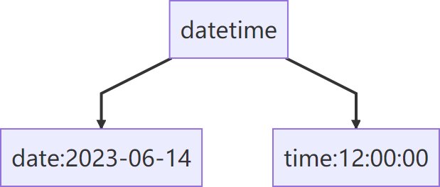

import pandas as pd
# 创建包含字符串时间列数据的dataframe
data = {'date': ['20230601', '20230602', '20230603', '20230604']}
df = pd.DataFrame(data)
# 展示dataframe
df| date | |
|---|---|
| 0 | 20230601 |
| 1 | 20230602 |
| 2 | 20230603 |
| 3 | 20230604 |
Pandas中有6种关于时间序列数据的常见对象，分别是timestamp、datetimeindex、period、periodindex、以时间为元素的series和以时间索引的dataframe。
Pandas时序处理中最常见的两种数据类型为datetime和timedelta。
datetime
datetime即既有日期date，又有时间time的数据，表示一个具体的时间点（时间戳）。

timedelta
timedelta表示两个时间点之差。如2023-01-01和2023-01-02之间的timedelta即为一天。
一般情况下，从.csv文件中导入的数据后，Dataframe中对应的时间列是字符串的形式，Pandas中提供了to_datetime()函数将字符串转换为datetime对象，并将其设置为Dataframe的索引。在Pandas中，这种类似于标准库中的日期时间对象称为：datetime64、datetime.datetime、pandas.Timestamp。
import pandas as pd
# 创建包含字符串时间列数据的dataframe
data = {'date': ['20230601', '20230602', '20230603', '20230604']}
df = pd.DataFrame(data)
# 展示dataframe
df| date | |
|---|---|
| 0 | 20230601 |
| 1 | 20230602 |
| 2 | 20230603 |
| 3 | 20230604 |
# 将字符串时间列转换为datetime64格式的对象
df['date'] = pd.to_datetime(df['date'])
# 打印转换后的结果
df| date | |
|---|---|
| 0 | 2023-06-01 |
| 1 | 2023-06-02 |
| 2 | 2023-06-03 |
| 3 | 2023-06-04 |
将字符串数据转换为datetime64对象后，这些时间日期数据就具有了可比性，这样一来，我们就可以用它们来获取时间序列的长度。
# 计算时间序列的长度
time_length = df['date'].max() - df['date'].min()
# 打印时间序列的长度
time_lengthTimedelta('3 days 00:00:00')另外，我们还可以运用dt属性中的month函数来将月份信息提出出来，并将提取的结果赋值给新列。
# 提取月份信息并形成新列
df['month'] = df['date'].dt.month
# 打印DataFrame
df| date | month | |
|---|---|---|
| 0 | 2023-06-01 | 6 |
| 1 | 2023-06-02 | 6 |
| 2 | 2023-06-03 | 6 |
| 3 | 2023-06-04 | 6 |
在Pandas中，日期索引是一种特殊的索引类型，用于在时间序列数据中以日期或时间作为索引。日期索引在处理时间序列数据时非常有用，可以轻松地对数据进行切片、重采样和时间范围选择等操作。
Pandas提供了两种主要的日期索引类型：Timestamp和DatetimeIndex。
Timestamp:
Timestamp是Pandas中表示单个时间点的对象，可以使用pd.Timestamp()函数创建一个Timestamp对象，指定日期和时间。
pd.Timestamp('2023-06-17 10:30:00')Timestamp('2023-06-17 10:30:00')DatetimeIndex:
DatetimeIndex是一种由Timestamp对象构成的索引对象。可以使用pd.to_datetime()函数将日期时间字符串转换为DatetimeIndex对象。
pd.to_datetime(['2023-06-17', '2023-06-18', '2023-06-19'])DatetimeIndex(['2023-06-17', '2023-06-18', '2023-06-19'], dtype='datetime64[ns]', freq=None)使用日期索引可以实现以下功能：
切片和选择：
使用日期索引可以切片和选择时间序列数据。
# 创建一个示例时间序列数据
data = {'日期': pd.date_range(start='2023-01-01', periods=10, freq='D'),
'销售量': [100, 150, 120, 200, 180, 160, 190, 210, 230, 250]}
df = pd.DataFrame(data)
# 将日期列设置为索引
df.set_index('日期', inplace=True)
# 选择特定日期范围的数据
selected_data = df['2023-01-03':'2023-01-07']
selected_data| 销售量 | |
|---|---|
| 日期 | |
| 2023-01-03 | 120 |
| 2023-01-04 | 200 |
| 2023-01-05 | 180 |
| 2023-01-06 | 160 |
| 2023-01-07 | 190 |
# 选择特定月份的数据
selected_month = df[df.index.month == 1]
selected_month| 销售量 | |
|---|---|
| 日期 | |
| 2023-01-01 | 100 |
| 2023-01-02 | 150 |
| 2023-01-03 | 120 |
| 2023-01-04 | 200 |
| 2023-01-05 | 180 |
| 2023-01-06 | 160 |
| 2023-01-07 | 190 |
| 2023-01-08 | 210 |
| 2023-01-09 | 230 |
| 2023-01-10 | 250 |
# 使用布尔条件选择数据
boolean_selection = df[df['销售量'] > 200]
boolean_selection| 销售量 | |
|---|---|
| 日期 | |
| 2023-01-08 | 210 |
| 2023-01-09 | 230 |
| 2023-01-10 | 250 |
重采样：
重采样是指将时间序列数据从一个频率转换为另一个频率。使用日期索引，使用resample()方法可以对数据进行重采样，如按日、按周或按月重采样数据。
# 按周重采样并计算平均值
weekly_resampled = df.resample('W').mean()
weekly_resampled| 销售量 | |
|---|---|
| 日期 | |
| 2023-01-01 | 100.000000 |
| 2023-01-08 | 172.857143 |
| 2023-01-15 | 240.000000 |
# 按月重采样并计算总和
monthly_resampled = df.resample('M').sum()
monthly_resampled| 销售量 | |
|---|---|
| 日期 | |
| 2023-01-31 | 1790 |
时间范围生成：
Pandas提供了几个函数来生成一系列日期索引，如pd.date_range()和pd.period_range()。指定开始日期、结束日期和频率来生成日期范围，以便在创建时间序列数据时使用。
# 生成一个包含5个连续日期的时间范围
date_range = pd.date_range(start='2023-01-01', periods=5, freq='D')
date_rangeDatetimeIndex(['2023-01-01', '2023-01-02', '2023-01-03', '2023-01-04',
'2023-01-05'],
dtype='datetime64[ns]', freq='D')# 生成一个包含3个月份的时间范围
month_range = pd.date_range(start='2023-01-01', periods=3, freq='M')
month_rangeDatetimeIndex(['2023-01-31', '2023-02-28', '2023-03-31'], dtype='datetime64[ns]', freq='M')# 生成一个包含10个工作日的时间范围
business_days_range = pd.date_range(start='2023-01-01', periods=10, freq='B')
print(business_days_range)DatetimeIndex(['2023-01-02', '2023-01-03', '2023-01-04', '2023-01-05',
'2023-01-06', '2023-01-09', '2023-01-10', '2023-01-11',
'2023-01-12', '2023-01-13'],
dtype='datetime64[ns]', freq='B')日期偏移：
Pandas提供了日期偏移功能，可以在日期上进行简单的数学运算。例如，您可以使用+或-操作符在日期索引上进行加减运算，例如df.index + pd.DateOffset(days=1)将日期索引向前偏移一天。
# 创建一个日期索引
date_index = pd.date_range(start='2023-01-01', periods=5, freq='D')
# 将日期索引向前偏移一天
forward_offset = date_index + pd.DateOffset(days=1)
forward_offsetDatetimeIndex(['2023-01-02', '2023-01-03', '2023-01-04', '2023-01-05',
'2023-01-06'],
dtype='datetime64[ns]', freq=None)# 将日期索引向后偏移两天
backward_offset = date_index - pd.DateOffset(days=2)
backward_offsetDatetimeIndex(['2022-12-30', '2022-12-31', '2023-01-01', '2023-01-02',
'2023-01-03'],
dtype='datetime64[ns]', freq=None)# 将日期索引向前偏移一个月
month_offset = date_index + pd.DateOffset(months=1)
month_offsetDatetimeIndex(['2023-02-01', '2023-02-02', '2023-02-03', '2023-02-04',
'2023-02-05'],
dtype='datetime64[ns]', freq=None)日期索引是Pandas中处理时间序列数据的重要工具之一，它提供了方便的方法来处理、分析和可视化时间相关的数据。使用日期索引，您可以更轻松地操作和探索时间序列数据。
在Pandas中，.dt接口提供了许多常用的属性，用于处理日期和时间类型的Series数据。以下是一些常见的.dt接口属性的示例： | 属性 | 描述 | | :—————— | :————————————————- | | .year | 返回日期的年份。 | | .month | 返回日期的月份。 | | .day | 返回日期的日。 | | .hour | 返回时间的小时。 | | .minute | 返回时间的分钟。 | | .second | 返回时间的秒。 | | .microsecond | 返回时间的微秒。 | | .nanosecond | 返回时间的纳秒。 | | .weekday | 返回日期对应的星期几（0代表星期一，6代表星期日）。 | | .weekday_name | 返回日期对应的星期几的名称。 | | .weekofyear | 返回日期所在年份的第几周。 | | .quarter | 返回日期所属的季度。 | | .is_month_start | 检查日期是否为月初。 | | .is_month_end | 检查日期是否为月末。 | | .is_quarter_start | 检查日期是否为季度初。 | | .is_quarter_end | 检查日期是否为季度末。 | | .is_year_start | 检查日期是否为年初。 | | .is_year_end | 检查日期是否为年末。 | | .is_leap_year | 检查日期是否为闰年。 |
在 Pandas 中，重采样是指将时间序列数据从一个频率转换为另一个频率的过程。重采样可以帮助我们对时间序列数据进行聚合、降采样或升采样，以适应不同的分析需求。Pandas 提供了强大的重采样功能，可以根据日期和时间索引对时间序列数据进行灵活的重采样操作。
重采样主要有两种类型：降采样（Downsampling）和升采样（Upsampling）。
df.resample('D').sum() # 将数据按天进行降采样，并计算每天的总和| 销售量 | |
|---|---|
| 日期 | |
| 2023-01-01 | 100 |
| 2023-01-02 | 150 |
| 2023-01-03 | 120 |
| 2023-01-04 | 200 |
| 2023-01-05 | 180 |
| 2023-01-06 | 160 |
| 2023-01-07 | 190 |
| 2023-01-08 | 210 |
| 2023-01-09 | 230 |
| 2023-01-10 | 250 |
df.resample('H').ffill() # 将数据按小时进行升采样，并使用向前填充方法插值数据| 销售量 | |
|---|---|
| 日期 | |
| 2023-01-01 00:00:00 | 100 |
| 2023-01-01 01:00:00 | 100 |
| 2023-01-01 02:00:00 | 100 |
| 2023-01-01 03:00:00 | 100 |
| 2023-01-01 04:00:00 | 100 |
| ... | ... |
| 2023-01-09 20:00:00 | 230 |
| 2023-01-09 21:00:00 | 230 |
| 2023-01-09 22:00:00 | 230 |
| 2023-01-09 23:00:00 | 230 |
| 2023-01-10 00:00:00 | 250 |
217 rows × 1 columns
在重采样过程中，我们需要使用 resample() 函数指定重采样的频率，例如 ‘D’ 表示按天重采样，‘H’ 表示按小时重采样。然后，我们可以对重采样对象应用聚合函数（例如 sum()、mean()、max()、min() 等）或插值函数（例如 ffill()、bfill() 等）来处理数据。